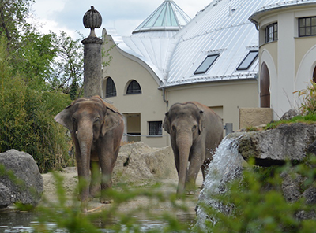

Visit the Hellabrunn Zoo
The Hellabrunn Zoo is a must-see attraction for families seeking educational opportunities and animal lovers.
Surf at the Flosslände
The Flosslände is not only the world's oldest river wave enjoyed by surfers. Here, visitors can also kayak, splash and camp.
Go climbing/bouldering
In the world’s biggest climbing hall 6,540sqm of artificial walls can be found in the outdoor and indoor area.